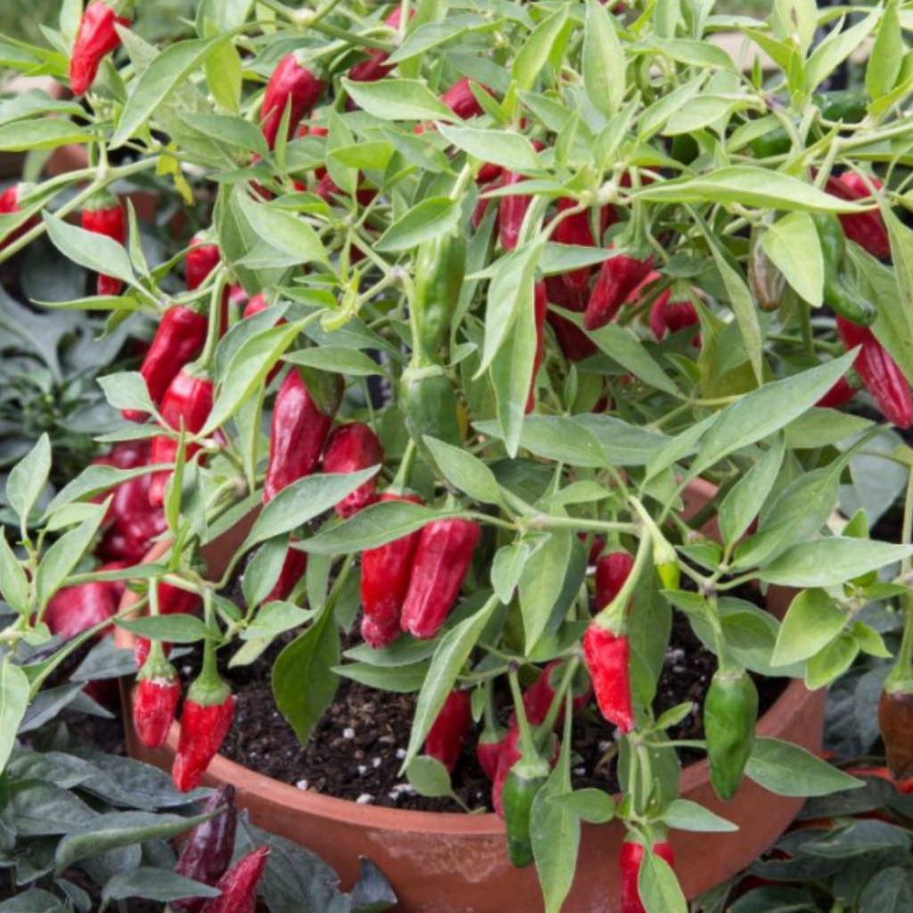

Chili

Sådd och uppdrivning
- När: Förodla inomhus i januari–mars (eller tidigare för långsamma sorter).
- Jord: Använd näringsfattig såjord i krukor med dränering.
- Förhållanden: Placera varmt (20–24 °C) och ljust. Använd värmematta vid behov.
- Ljus: 12–16 timmar per dag med växtbelysning rekommenderas.
Omskolning och skötsel
- Omskolning: När plantan fått sitt första karaktärsbladpar, plantera om i näringsrik jord.
- Krukor: Byt till större krukor stegvis för stabilare plantor.
- Vattning: Jorden ska vara fuktig, inte blöt.
- Näring: Börja gödsla när plantan är etablerad.
- Temperatur: Undvik drag och kalla fönster. 22–26 °C dagtid är idealiskt.
Utplantering och övervintring
- Utplantering: Sker när det är över 10 °C nattetid. Skyddad, solig plats rekommenderas.
- Övervintring: Klipp ner plantan till 1/3 och förvara inomhus under vintern.